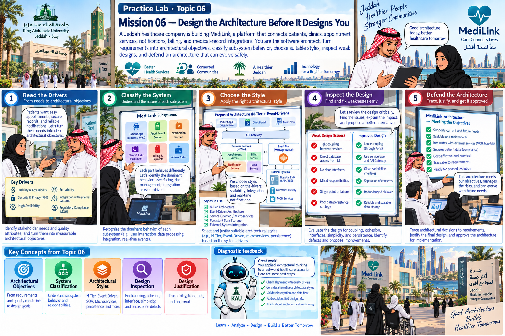

Practice Lab · Topic 06
A Jeddah healthcare company is building MediLink, a platform that connects patients, clinics, appointment services, notifications, billing, and medical-record integrations. You are the software architect. Turn requirements into architectural objectives, classify subsystem behavior, choose suitable styles, inspect weak designs, and defend an architecture that can evolve safely.
